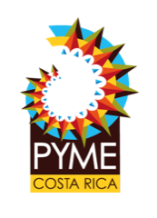

Certificación
- Emitido
- Fecha del servicio
Datos del cliente
Datos de la empresa
| Servicio realizado | Cobrado |
|---|---|
¡Su empresa de confianza!

Datos del cliente
Datos de la empresa
| Servicio realizado | Cobrado |
|---|---|
¡Su empresa de confianza!
Abriendo el documento…